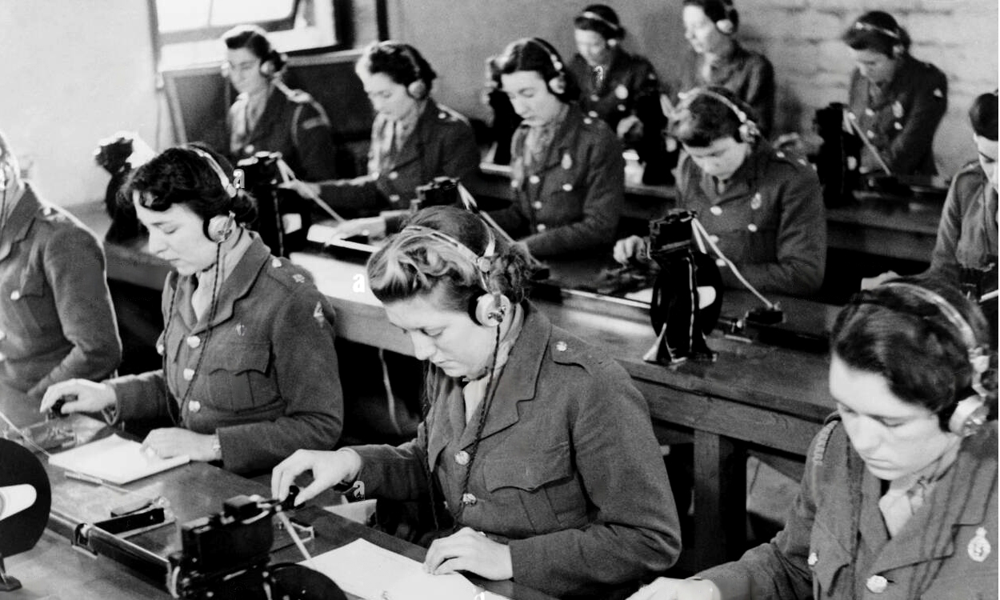

O Código Morse foi criado em 1837 por Samuel Morse, um pintor e inventor norte-americano, em colaboração com Alfred Vail, seu assistente. Este sistema revolucionário surgiu da necessidade de enviar mensagens em longas distâncias com rapidez e eficiência, utilizando pulsos curtos e longos, representados por pontos e traços, para codificar letras e números.
A primeira demonstração pública do Código Morse ocorreu em 1844, com a famosa mensagem "What hath God wrought?" ("O que Deus fez?") enviada entre Washington D.C. e Baltimore, marcando o início de uma nova era na comunicação.
Como surgiu o Código Morse
A importância do Código Morse

No século XIX, o Código Morse tornou-se um pilar essencial para a comunicação global. Ele foi amplamente utilizado em telégrafos, permitindo a transmissão de mensagens quase instantaneamente entre cidades, países e continentes. Esse avanço acelerou o comércio, melhorou a segurança pública e desempenhou um papel crucial durante conflitos armados, como a Guerra Civil Americana.
Além disso, o Código Morse foi adotado por navios e ferrovias, garantindo maior segurança e coordenação em tempos de emergência, como o famoso chamado "SOS" (salve nossas almas).
Impacto Global
O impacto do Código Morse ultrapassou as fronteiras tecnológicas de sua época. Ele estabeleceu as bases para os modernos sistemas de comunicação digital, influenciando a criação de redes de telecomunicações e tecnologias como o rádio e a internet. Mesmo hoje, o Código Morse é lembrado como um marco na história da humanidade e ainda é utilizado em aplicações específicas, como aviação e rádio amador.
Seu legado está na forma como transformou o mundo em uma aldeia global, conectando pessoas e ideias de maneiras antes inimagináveis.